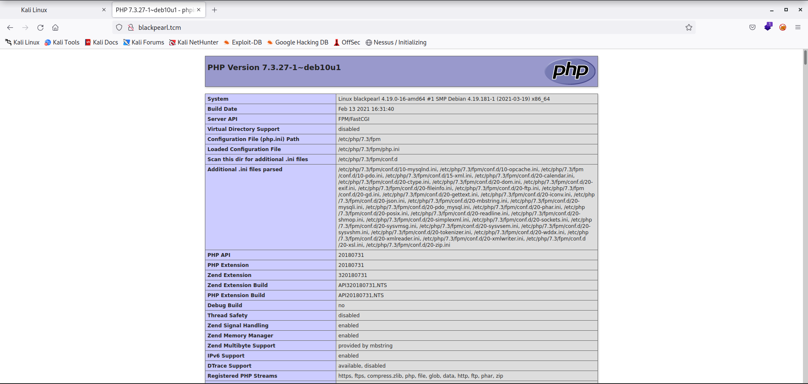

As we know that dictory bursting is not the entry point so will look into the dns
Will use a tool called Dnsrecon
Command : dnsrecon -r 127.0.0.0/24 -n 192.168.205.134 -d blah
where r is for range (i.e. scanning the local host)
n have to provide the ip address of the box that we are looking for
d for domain
──(root㉿kali)-[/home/kali]
└─# dnsrecon -r 127.0.0.0/24 -n 192.168.205.134 -d blah
[*] Performing Reverse Lookup from 127.0.0.0 to 127.0.0.255
[+] PTR blackpearl.tcm 127.0.0.1
[+] 1 Records Found
As there is dns record named blackpearl.tcm and have to add that in our Dns and etc/hosts file
Command : nano /etc/hosts (i.e. we have to add the edit the hosts file and not host)
And add
192.168.205.134 blackpearl.tcm and save it
Close the browser and rerun the web page to get this output
Webroswer : http://blackpearl.tcm/

Will again give a try to directory bursting (i.e. will run ffuf and see if we are able to discover anything)